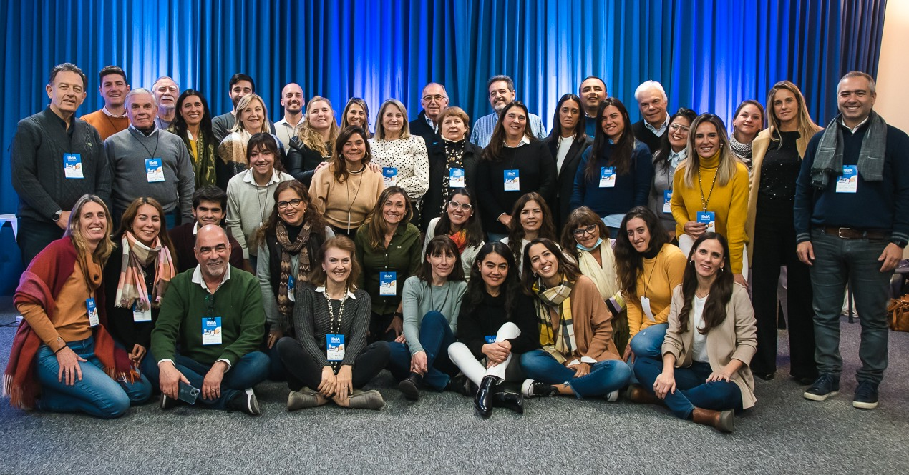
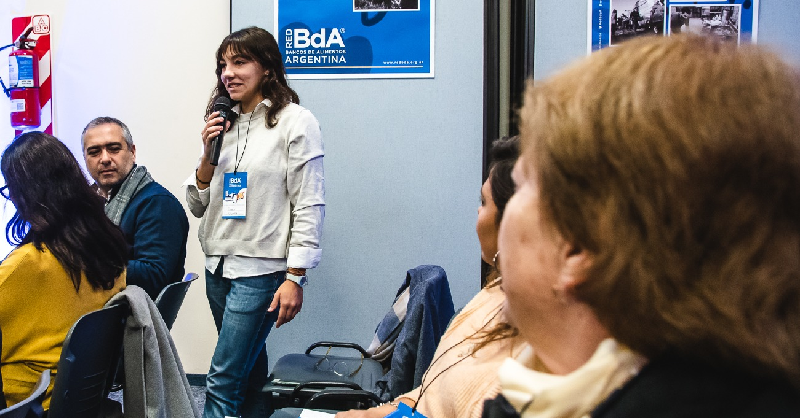
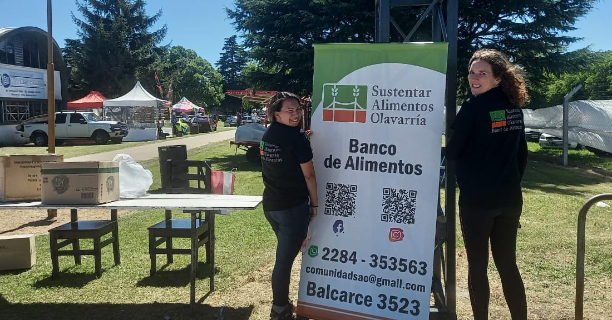
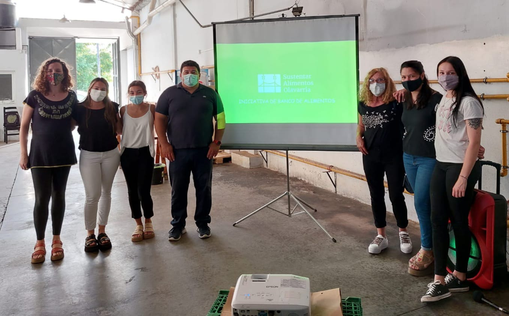
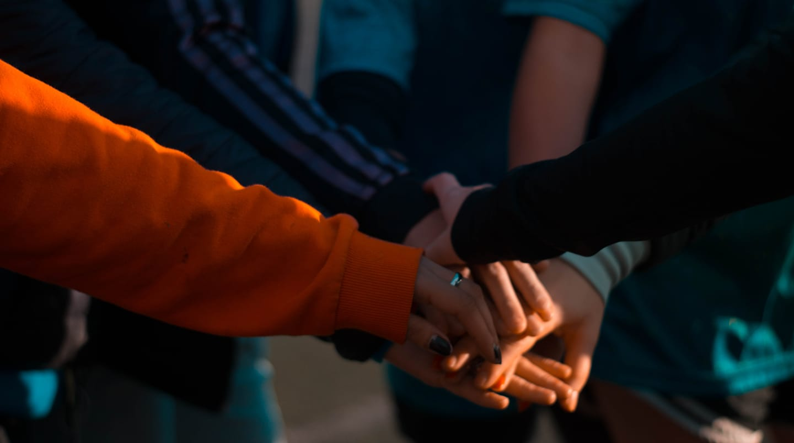
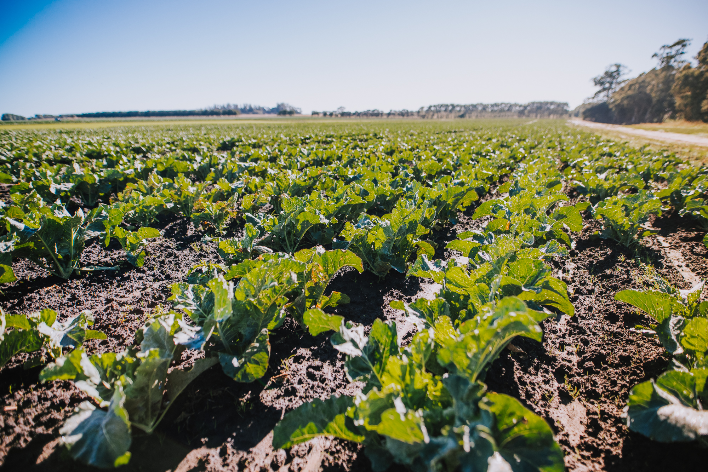

¿QUÉ ES SUSTENTAR ALIMENTOS OLAVARRIA?

Somos una organización sin fines de lucro y a partidaria que persigue a mediano plazo conformarse jurídicamente como Fundación Banco de Alimentos, en este sentido aplica sus metodologías como así también su estructura de trabajo teniendo en cuenta la dinámica de nuestra ciudad.
El modelo de gestión de los Bancos de Alimentos nació en Estados Unidos en la década del ’60 como vínculo entre las empresas productoras y de comercialización de alimentos y las personas necesitadas. John Van Hengel, fundó el primer Banco de Alimentos en Phoenix, Arizona, en 1967.
Así es que con el asesoramiento y el apoyo del Banco de Alimentos de Tandil nos proponemos como meta contribuir a reducir el hambre, mejorar la nutrición y evitar el desperdicio de alimentos.
Funcionamos como un puente entre aquellos que padecen déficit alimentario y quienes desean colaborar, lo hacemos recibiendo donaciones de alimentos y productos de parte de particulares, empresas, productores agropecuarios y supermercados, que luego a través de un canal que garantiza eficiencia y transparencia llega a quienes más lo necesiten.
Para eso solicitamos la donación de alimentos aptos para el consumo humano, los almacenamos, clasificamos y distribuimos, entre organizaciones sociales que dan de comer en el lugar a personas que lo necesitan.
Los alimentos que recibimos salieron del circuito comercial, pero están perfectamente aptos para ser consumidos. De esta manera devolvemos valor a los alimentos que han perdido su valor comercial y que de otra forma serían desechados. Contribuyendo de esta forma a mejorar nuestro ecosistema y con la alimentación de personas.
¿A QUIÉNES AYUDAMOS?

Proveemos variedad de alimentos a las entidades asociadas: Comedores barriales, merenderos, comedores escolares, hogares de niños y ancianos y (en general) a todo tipo de instituciones de bien común que cuenten con una historia comprobable de trabajo comunitario en esta área de asistencia y que deseen asociarse al proyecto.
Para asegurar la transparencia y eficiencia de la gestión, no se entregan alimentos a personas en forma individual, sólo las organizaciones pueden recibir donaciones.
La distribución de alimentos está estrictamente supervisada para que éstos lleguen a sus destinatarios en condiciones adecuadas. A tal fin, se implementa una cuidadosa rutina de visitas a las entidades para asegurar que se respetan las normas básicas de higiene y se dé un buen uso a las donaciones.
¿CUÁL ES NUESTRO MODELO DE TRABAJO?

SUSTENTAR a partir del asesoramiento del Banco de Alimentos de Tandil tomamos su modelo de trabajo, de esta manera recibimos alimentos, los clasificamos, almacenamos y distribuimos en plazos cortos, de esta forma se garantiza la trazabilidad de las donaciones y así productores, distribuidores, industrias alimenticias, supermercados y donantes particulares encuentran un canal confiable para realizar su aporte solidario.
Cada donante obtiene un recibo y un reporte de trazabilidad una vez que la mercadería fue entregada. Allí se detalla cada una de las organizaciones que han recibido los alimentos y la cantidad de kilos entregados a la institución.
¿CÓMO SE SOSTIENE ESTE MODELO?

Con el aporte de donantes y el trabajo de voluntarios en tareas diversas, como la descarga de la mercadería, la contabilidad y gestión y el proceso de selección y distribución de alimentos, bajo la coordinación de los responsables de la institución.
Desde SUSTENTAR no comercializamos los productos que distribuimos pero solicitamos lo que llamamos costo operativo o contribución simbólica que representa un pequeño porcentaje del valor de mercado y nos ayuda a sostener nuestro modelo (logística y almacenamiento) que nos permite generar una dinámica colaborativa y seguir ayudando a aquellos que sufren hambre.

Donaciones
Los alimentos deben tener la etiqueta de la fecha de vencimiento legible y con la descripción de los ingredientes.
Ademas, se puede donar dinero, conocimiento, transporte o tu tiempo como voluntario.

Ayuda
Para cualquier tipo de consulta o sugerencia, puede consultar desde cualquiera de nuestras 3 redes sociales, las cuales se encuentran en la barra de la derecha.